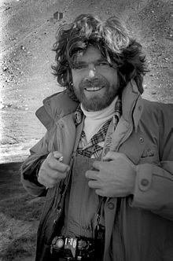
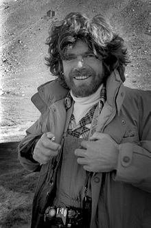

indice
- home
- gli ottomila
- biografia
|
Messner nasce secondogenito di nove fratelli a Bressanone nel 1944, da famiglia di lingua tedesca. Suo padre Josef, oltre che allevatore di polli e conigli, fa l'insegnante ed è anche il preside della piccola scuola valligiana. Cresciuto a Funes, a soli 5 anni compie la sua prima ascensione dolomitica sul Sass Rigais in compagnia del genitore. All'età di tredici anni inizia a scalare le vette della val di Funes in cui cresce; allarga quindi l'attenzione alle Dolomiti e successivamente alle intere Alpi. In seguito, dopo il diploma di geometra, studia all'Università degli Studi di Padova, presso la Facoltà di Ingegneria.
Nel 1972 sposa la giornalista tedesca Uschi Demeter, dalla quale divorzierà nel 1977. Nel 1981 nasce la prima figlia, Leila. La madre è la fotografa canadese Nena Holguin. Il 1º agosto 2009, a 64 anni e dopo 25 di fidanzamento, si sposa con la compagna Sabine Eva Stehle; la cerimonia si svolge nel comune di Castelbello-Ciardes. Con lei Messner ha avuto tre figli: Magdalena (1988), Simon (1991), e Anna (2002), e si è separato nel 2019. Nel maggio 2021 si sposa per la terza volta, la moglie è Diane Schumacher, nata in Lussemburgo e residente a Monaco di Baviera, di 36 anni più giovane.
Dal 1985 Messner ha importato poco più di una decina di esemplari di yak dall'Himalaya, dopo la spedizione sul Cho Oyu, nella quale questi lo hanno aiutato per il trasporto delle merci sino al campo base. Ogni inizio e fine estate, egli conduce la transumanza degli animali da Solda verso il rifugio Città di Milano, ai piedi del Gran Zebrù, e a fine stagione estiva per il percorso inverso. Una mezza dozzina di questi yak si trova anche nei pressi del monte Rite di Cibiana di Cadore, dove Messner ha costruito uno dei suoi musei. Nel 2005, un esemplare di orso bruno ha attaccato un esemplare di yak, causandogli ferite che lo hanno condotto ad una morte assistita.
Ad agosto 2015 esce la notizia che Messner ha dovuto abbandonare un'impresa scientifica "segreta" per la ricerca in Pakistan dello yeti (cui la figura di Messner era da sempre legata da pregresse vicende giornalistiche), salvo poi annullare il tutto in quanto era noto anche ai talebani la notizia del suo arrivo[11]. Sulla stessa vicenda, nel 2015 Messner si era comunque già espresso, sostenendone la teoria mitologica ovvero la derivazione del mito popolare dello yeti da una sottospecie ibrida di orso, l'orso delle nevi, a cui alcuni scienziati avevano dato appena conferma attraverso l'esame del DNA di un presunto scalpo di yeti.
|
 

|